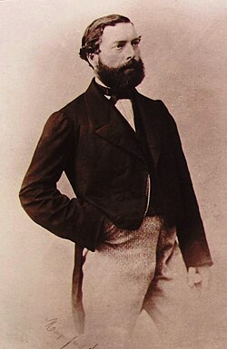

Amédée Félix PROUVOST — Né le 30/03/1820 à Roubaix — Décédé le 11/12/1885 à Roubaix
Amédée Félix PROUVOST
Né le 30/03/1820 à Roubaix
Décédé le 11/12/1885 à Roubaix
Résumé
Amédée Prouvost (Amédée I, 1820–1885) est le fondateur du Peignage Amédée Prouvost, établissement créé à Roubaix en 1851 qui constitue un tournant majeur de l'histoire industrielle lainière française. Fils d'Henri Prouvost, manufacturier et maire adjoint de Roubaix, il s'inscrit dans la tradition familiale d'entrepreneurs mais la dépasse par l'ampleur de son initiative. Montant à cheval pour parcourir la France et visiter les usines, puis s'extasiant devant les paysages avant de remplir ses carnets de notes d'affaires, il est le type même de l'entrepreneur roubaisien du XIXᵉ siècle, aventureux et positif.
En 1851, il fonde la société « Amédée Prouvost et Cie » avec les trois frères Lefebvre — Louis (1818–1875), Jean (1819–1893) et Henri (1825–1867), fils de Florentin Lefebvre et de Marie-Rose Ducatteau. Ce peignage, l'un des premiers grands peignages mécaniques de la région aux côtés de celui de Lorthiois-Malard, place Roubaix en position dominante dans la filière laine mondiale. Une seconde usine s'ajoute en 1855, et les deux établissements emploient déjà sept cents ouvriers en 1867 — l'année où le fondateur reçoit dans ses ateliers l'empereur Napoléon III et l'impératrice Eugénie. Nommé chevalier de la Légion d'honneur en 1877, il meurt en 1885, laissant à ses trois fils une affaire florissante. La société sera continuée par ses descendants, et son petit-fils Jean Prouvost y adossera en 1911 la filature de la Lainière de Roubaix, qui deviendra la plus grande filature d'Europe.
Le 15 septembre 1844, il épouse Joséphine Yon (1827–1902), fille d'Antoine Charles Yon, alliance au sein du même monde patronal roubaisien. De cette union naissent notamment sa fille Joséphine Hyacinthe (1845–1919), qui épouse Charles Henri Droulers et unit ainsi les dynasties Prouvost et Droulers, et son fils Amédée Charles (Amédée II, 1853–1927), qui reprend la direction du peignage, développe considérablement l'exportation de la laine peignée jusqu'en Bohême et sera nommé chevalier de la Légion d'honneur en 1923.
Sources :

Arbre généalogique
20/06/1798 — 12/12/1833
Hyacinthe DELAOUTRE
18/03/1808 — 14/10/1844